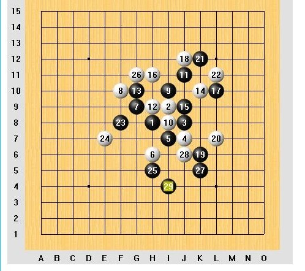
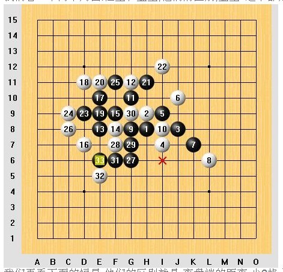
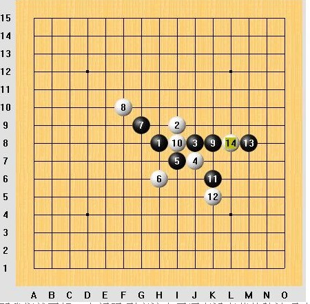
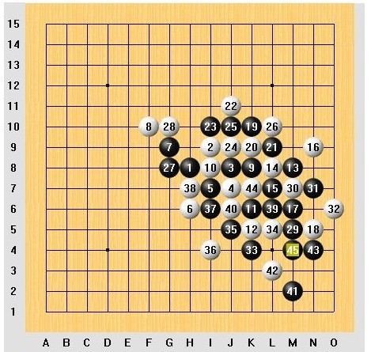

经典骗招.恒星
#1 经典骗招.恒星 作者：茗弈求学 发表时间：2009-11-3 10:34:30
近日去浙江论坛,看到去年的浙江棋谱,去年的对局我下载出来,突然发现,这里有恒星开局,而且是一轮有2盘,
为什么都下这个变化呢,这里,的确是有问题,
我们先看比赛的棋局:
第一盘 黑方:陈新
我们看到,.虽然黑胜了,但是呢,这里白后面明显有漏算.到22手,基本上平衡
第二盘:
黑方:易海力 白方:薛文曦
从这盘,我们看到,.9手黑变了,因为没有完全是把握黑胜.那么到14手这妙手后,16手,局面很平衡.如果26手不急的话,这棋还是白好,因为白抢了外围

从这两盘棋,我们思考,这个白其实战术上是很成功的,如果说细心一点,这两盘,黑是胜不了的
那么恒星是黑好的局,而且对于这个4,我们一般认为不是最强,
应该说,黑如果下对,就可以必胜!
我们看一下两个局面.恒星和金星,他们的区别,金星 这个都是定式 黑胜

我们再看下面的恒星,他们的区别就是,离盘端的距离,少2格,这样黑是不行的,正是这个骗招的问题所在

那我们就要想一个问题,到底这个黑还有没有其他胜法呢,其实呢.
这个早就有定式可以胜,那么,这个胜是不是很简单,这里明确的说,不是,为什么呢,
如果不是那么熟悉,我相信,这个次序,以及到最后一步胜是非常难的. 下面,就是这个定式的正确下法

从这里,我们看出,不管是什么样的棋.都是需要人思考的，有些人说,五子棋接近“终结”了，
那么，谁能说，五子棋谁就是不败的呢？
［ 黄药师 于 2009-11-3 11:00:25 时奖励此帖[金币加 20 威望加1］
#2 Re:经典骗招.恒星 作者：黄药师 发表时间：2009-11-3 11:01:13
五子棋接近“终结”就算都终结了，人脑不是电脑，人脑是终结不了的。
［ 茗弈求学 于 2009-11-4 10:50:36 时花20金币送鲜花一朵］
#3 Re:经典骗招.恒星 作者：aabb 发表时间：2009-11-4 21:06:01
这个有人发过了吧。